Contacts
-  Samara, Russia
- Milena(@Milena-Belianova)
- Milena Belianova
- +79871672847
- milena.belianova@gmail.com
Work Experience
Jun, 2016 - Till Now
EPAM Systems, Senior Software Testing Engineer
Jan, 2011 - Dec, 2015
I was working as an accountant in several different companies.
Education
Kaliningrad State Technical University
Applied Information Science in Economics
About Me
I have been working in EPAM Systems since 2016. I am a Senior Software Testing Engineer. Currently I am on Maternity leave. Before that my work included automation testing, I interacted a lot with developers, I am familiar with their work and it seems to me very interesting. I had time to think and I decided to become a software developer. So, after Maternity leave I want to return in EPAM and work as a developer.
Skills
My skills mostly include functional and automation testing skill. But now I am learning and trying to focus and expand my knowledge in:
- HTML
- CSS
- JavaScript
- Git
- Jest
Code example
const fillArray = (start, end) => {
let newArray = [];
if (start <= end) {
for (let i = start; i <= end; i++) {
newArray.push(i);
}
} else if (start > end) {
for (let i = start; i >= end; i--) {
newArray.push(i);
}
} else {
throw "Start or End point are undefined or NaN";
}
return newArray;
};
fillArray(1,5) //[1,2,3,4,5]
Projects
Languages
- English - B2 (According to EPAM English testing)
- Russian - native
- Bulgarian - Intermediate (live and study there)
I worked on two foreign projects in EPAM, where I need to use English. On the first project I worked only for a few months. The team was from the Czech Republic, so we had to interact in English. The second project was more interesting. I worked on it for almost a year and a half. Part of the customer's team was based in London, UK. So English communication was on a daily basis, including daily stand-ups, communication with PM, analyst, developer and other people. During this period I was lucky to visit London, to live and work there for a couple of weeks during the business trip.